to see all routing
All Routing command
ip route show
for see all routing for ip v6
Routing for ip v6
ip -6 route show
Old command to see routing
Route - an obsolete utility included in the net-tools package. used to display the routing table and build static routes
you need install net-tools (apt install net-tools)
route -n
for v6 ip
route -n -6
routel - its utility for display routing its script for ip route
routel
New utilities for networking
ip - is a linux command line utility from the iproute2 package. It allows configuration of the network subsystem and is a replacement for the ifconfig, route, arp utilities.
Usege:
ip [OPTIONS] OBJECT {COMMAND | help}
ip [-force] -batch filename
ip route list
ip -6 route
ip -br -4 a
-br, -brief - display only basic information for easy reading
-c, -color - highlight with color
-h, -human - display data in a human-friendly way
-o, -oneline - output each entry on a new line
-a, -all - apply the command to all objects
-r, -resolve - display hostname with DNS
ip -br -6 -c -h -r -a
ip -br -c neighbor
Display links
ip -br -link
IP Route
Route add route before reboot via ip
Route add route BEFORE reboot via ip
ip route add default {NETWORK/MASK} via {GATEWAYIP} /{DEVICE}
ip route add 192.168.66.0/24 via 192.0.2.1
ip route add prohibit 10.1.1.1/32
ip -6 route add default via 2001:db8
ip -6 route add 2001:4860:4860::8888/128 via 2a05:4800:4:f200:: metric 100
for route delete
ip route del 192.168.66.0/24
Route change route before reboot via ip
Route change route before reboot via ip
ip route add default {NETWORK/MASK} via {GATEWAYIP} /{DEVICE}
ip route change 192.168.25.0/24 dev ens3
ip route replace 192.192.25.0/24 dev ens3
ip route add unreachable 10.10.10.0/24
ip route add prohibit 10.1.1.1/32
ip route add throw 10.1.1.1/32
NETPLAN
Netplan - to add routes permanently, it is necessary to write in the netplan configuration
modify file /etc/netplan/00-installer-config.yaml
metric - metrics type - blackhole/unreachable/prohibit/trow to - destination or default via - gateway
try to connect if you not connected its return to config before change
netplan try
after all good apply config
netplan apply
DHCP
DORA
Discovery
src-mac=<client>, dst-mac=<broadcast>, protocol=udp,
src-ip=0.0.0.0:68, dst-ip=255.255.255.255:67
Offer
src-mac=<DHCP-server>, dst-mac=<broadcast>, protocol=udp,
src-ip=<DHCP-server>:67, dst-ip=255.255.255.255:67
Request
src-mac=<client>, dst-mac=<broadcast>, protocol=udp,
src-ip=0.0.0.0:68, dst-ip=255.255.255.255:67
Acknowledgement
src-mac=<DHCP-server>, dst-mac=<broadcast>, protocol=udp,
src-ip=<DHCP-server>:67, dst-ip=255.255.255.255:67
DHCPNAK - is sent by the server instead of a final confirmation. Such A denial may be sent to the client if the lease for the requested IP has expired or the client has moved to a new subnet
Renew DHCP
dhclient -r
DHCPRELEASE - The client sends this message to notify the server that the occupied IP has been released. In other words, this is an early termination of the lease.
DHCPINFORM - With this message, the client requests local settings from the server. Dispatched when the client has already received an IP, but for proper operation it needs a network configuration. The server informs the client a response message indicating all the requested options
DHCP CLIENT IDENTIFICATION
DHCP-сервер может отслеживать ассоциацию аренды с конкретным клиентом на основе идентификации A DHCP - server can track the association of a lease with a particular client based on the identity
Identification can be achieved in two ways:
Based on the “caller-id” option (dhcp-client-identifier from RFC2132)
Based on the MAC address if the “caller-id” parameter is not specified
Display stored pool of leased dhcp
Information about leased addresses is stored in:
cat /var/lib/dhcp/dhcp.leases
DHCP Server Install
Install DHCP
apt-get install isc-dhcp-server
for change minimal options in config
/etc/dhcp/dhcpd.conf
# minimal sample /etc/dhcp/dhcpd.conf
default-lease-time 600;
max-lease-time 7200;
subnet 192.168.1.0 netmask 255.255.255.0 {
range 192.168.1.150 192.168.1.200;
option routers 192.168.1.254;
option domain-name-servers 192.168.1.1, 192.168.1.2;
option domain-name "mydomain.example";
}
interface specification
/etc/default/isc-dhcp-server
INTERFACESv4="eth4”
restart dhcp service
systemctl restart isc-dhcp-server.service
for autorestart run
systemctl enable isc-dhcp-server.service
DHCP Static leases
Binding of clients to permanent ip-addresses is configured in the file:
/etc/dhcp/dhcpd.conf
per host:
subnet 192.168.1.0 netmask 255.255.255.0 {
host server1 {
hardware ethernet DD:GH:DF:E5:F7:D7;
fixed-address 192.168.1.2;
}
host server2 {
hardware ethernet 00:JJ:YU:38:AC:45;
fixed-address 192.168.1.20;
}
IPV6
SLAAC
SLAAC - stands for Stateless Address Auto Configuration and the name pretty much explains what it does. It is a mechanism that enables each host on the network to auto-configure a unique IPv6 address without any device keeping track of which address is assigned to which node.
“workbench.editorAssociations”: { “./slaac.svg”: “hediet.vscode-drawio-text”, }
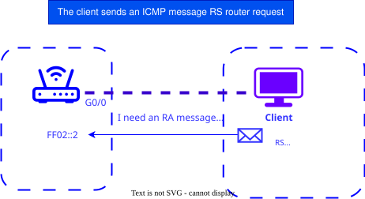
-
enabled on the router support IPv6. IPv6 forwarding
-
The router interfaces are assigned a network address (network prefix and prefix length, e.g. 2001:DB8:ACAD:D::1/64)
-
If the client is configured to automatically get IPv6 address, it starts sending ICMP “Router Request” RS (Router Solicitation) on all routers at address multicast address FF02::2
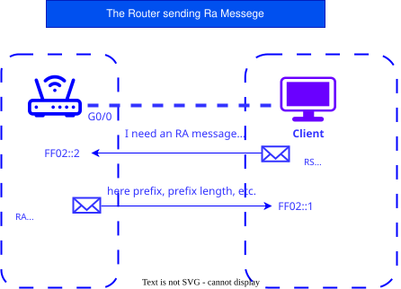
-
The router receive RS message and sends back the message “Reply router” RA (Router Advertisement)
-
AdvSendAdvert on
-
Prefix included in RA message and network prefix length
-
The RA message is sent to the IPv6 multicast address FF02::1. As an address source take local address link-local router channel address (FE80::/10 - FEBF::/ 10 )
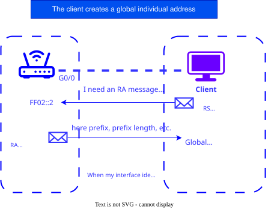
-
Client, receiving in RA-message the prefixand a network prefix length, generates global individual IPv6 address by adding the node part in two methods:
-
EUI-64 - using the EUI-64 process, using its 48-bit MAC address
-
Generation of randomized - 64 bita random number generated by the client operating system
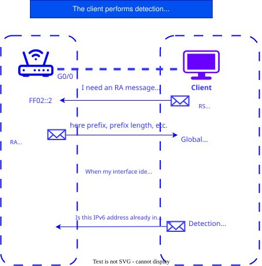
-
SLAAC is a process without trackingstate. Therefore, before using a newly created IPv6 address, it is necessary to check its uniqueness
-
To do this, the client makes a request to thisaddress using the DAD (Duplicate Address Detection) protocol.(Dublicate Address Detection) - part of theICMPv6 protocol
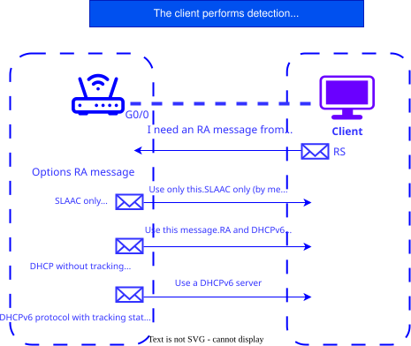
-
Modes for configuring IPv6-client : SLAAC, DHCPv6 or SLAAC + DHCPv6 depends on the settings, contained in the ICMPv6 message RA “Router Response” message and are set on the router with special commands
-
These commands set two flags.They are contained in RA messages and specify which of the options should be used by the client
Flags:
- Managed configuration flag addresses (M)
- Other configuration flag (O)
*The client operating system may ignore the RA message and use only the DHCPv6 server
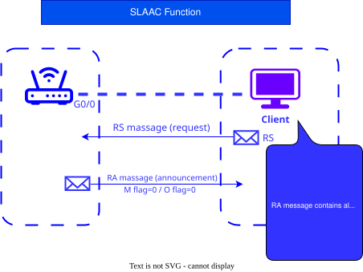
- The SLAAC function is a function ndefault on routers (M flag=0, O flag=0)
AdvManagedFlag: off
AdvOtherConfigFlag: on
- The client uses IPv6 for configuration addresses only information from the message RA is: “prefix, prefix length” default gateway (local address router channel) MTU DNS
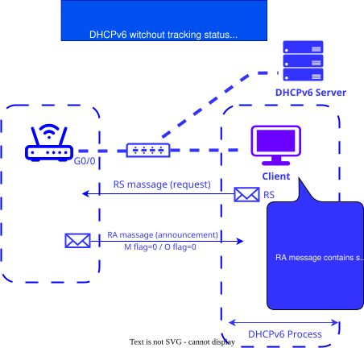
- SLAAC + DHCP enabled combination M flag =0, O flag=1
AdvManagedFlag: off
AdvOtherConfigFlag: on
Router(config-if)
# ipv6 nd other-config-flag
The client uses IPv6 for configuration addresses:
- information from the RA message from the SLAAC server (prefix, prefix length, gateway by default - link-local address router)
information from the DHCPv6 server (list DNS servers)
SLAAC Address Construction
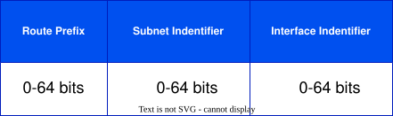
Routing prefix + subnet identifier = 64 bits
/64 is the minimum prefix that can be allocated to a user Typically, the user is allocated a subnet / 48 - / 64
SLAAC Subneting
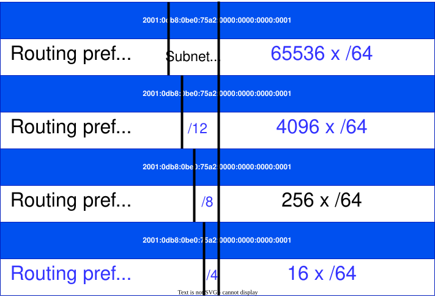
Multiple address types
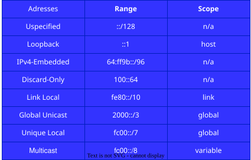
Installation SLAAC on Ubuntu
Installation radvd
apt install radvd
Installing the debug utility
apt install radvdump
Configuration file
/etc/radvd.conf
run debug
radvdump
Set address in /etc/netplan
network:
version: 2
ethernets:
ens4:
dhcp4: no
dhcp6: no
addresses:
- 2a05:AB00:4:f201::1/64
/ETC/RADVD.CONF
interface ens4
{
AdvSendAdvert on; ## (Sending advertisement messages to other hosts)
AdvManagedFlag: off
AdvOtherConfigFlag: off
AdvLinkMTU 1500; ## (Fragmentation unwanted (tm))
MaxRtrAdvInterval 300;
RDNSS 2001:4860:4860::8888 2001:4860:4860::8844 # DNS
{
};
prefix 2a05:AB00:4:f201::/64 ## (IPv6 subnet prefix assigned by our PoP)
{
AdvOnLink on;
AdvAutonomous on;
};
}
NETPLAN on Client
network:
version: 2
ethernets:
ens4:
dhcp6: true
accept-ra: yes
Option to send route with highest priority
route ::/0
{
AdvRoutePreference high;
};
Sending DNS server addresses via SLAAC
RDNSS 2001:4860:4860::8888 2001:4860:4860::8844
MTU Correction
AdvLinkMTU 1500;
Tools for working with MAC addresses
ARP Tools
arp tables
arp -n
anti arp spoofing
ip -4 neighbour add 192.168.2.1 lladdr 50:00:01:02:00:01 dev ens3 ip -4 neighbour change 192.168.2.1 lladdr 50:00:01:02:00:01 dev ens3
ARPscan
arp install arp-scan
arp-scan --inteface=eth0 localnet
arp-scan --inteface=eth0 192.168.0.0/24
ARP = NDP
NDP = Neighbor Discovery Protocol
NDP used 5 different types of packages:
type 133 - Router Solicitation - type 144 - Router Advartisement type 135 - Neighbor Solicitation type 135 - Neighbor Advartisement type 137 - Redirect
Neighbor Discovery - uses several different specials addresses multicast :
- Link-local scope address for all nodes - FF02::01 (multicast)
- Link-local scope address for all routers - FF02::02 (multicast)
ICMPv6
ICMPv6 is an integral part of IPv6
-
used for error reporting, arising from packet processing and to perform other functions such as diagnosis
-
there are 2 types of ICMPv6 message (error - type 0-127), (information type 128-255)
Neighbor Solicitation - Nodes perform address resolution through multicast distribution neighbor solicitation which asks the target host to return a link layer address (MAC)
-
to make sure that the neighbor is still a life
-
the target node returns its link layer address (MAC) (unicast) Router Advartisement
Neighbor Solicitation
-
one pair of request-response packets enough for both to allow data link layer addresses (MAC) one another
-
is used for detection Dublicate Address Detection (DAD)
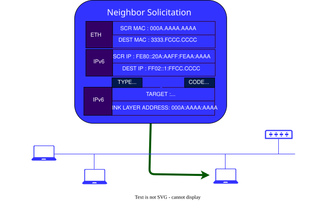
Source:
- address set on the interface from which the message is sent or (in DAD process)
Destination:
- solicited-node multicast address or destination address
solicited-node multicast address calculates from unicast and anycast address host. all the hosts same prefix FF02:FF00:0/104. to prefix add 24 low-order bit address (unicast or anycast) as a result solicited-node multicast adress be range from FF02:0:0:0:0:1:FF00:0000 to FF02:0:0:0:0:1:FFFF:FFFF
the host must calculate and сonnected (on the respective inteface) to all solicited-node multicast adresses, who received from all unicast and anycast adresses who configured on interface host (automaticly or manualy)
Solicited-node multicast address used by protocol - Neighbor Discovery or (ND or NDP)
Neighbor Advertisement
- request on messege Neighbor Solicitation
node can messege unsolicited (no answer) Neighbor Advertisement for quickly distribution new information (unreliably) for exemple : announcement change link-layer adresses (MAC)
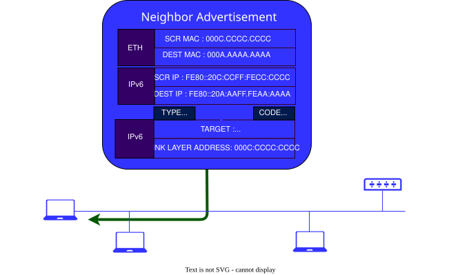
Source:
- its address of interface from who send messege
Destination:
- Source Address of Neighbor Solicitation or all-nodes multicast address
MAC
01-00-5E-00-00-00 to 01-00-5E-7F-FF-FF IPv4 Multicast
33-33-00-00-00-00 to 33-33-FF-FF-FF-FF IPv6 Multicast
01-08-C2-XX-XX-XX service protocol STP, LLDP, EAPOL
Know MAC
for know MAC address on inteface
ifconfig ens3 | grep ether
ip –br link
- -br = tables
cat /sys/class/net/ens3/address
- /en3/ <= your interface
ifconfig ens3 | grep ether
Change MAC
macchanger install
apt-get install macchanger macchanger-gtk
down interface
ip-link set dev ens4 down
Random MAC
nacchanger -r ens4
Don’t change the vendor bytes of MAC
nacchanger -e ens4
Random MAC
nacchanger --mac = XX:XX:XX:XX:XX ens4
Reset MAC address to its original, permanent hardware value.
nacchanger -p ens4
up interface after changes
ip link set dev ens4 up
It is possible to change MAC address via NETPLAN
In the interface section of the /etc/netplan/00-installer-config.yaml file
Add fields
ens3:
match:
macaddress: 50:00:00:01:00:00 #(default MAC-address)
macaddress: 50:11:22:33:44:55 #(MAC what you want)
ens3:
match:
macaddress: 50:00:00:01:00:00
macaddress: 50:11:22:33:44:55
dhcp4: no
routes: no
- to: default
- via: 2a05:4800:4:f200::
- to: default
- via: 192.168.1.1
VPN
Wireguard
- Updating the list of packages.
sudo apt-get update && sudo apt-get upgrade
sudo apt-get install wireguard
- Firewall settings On deb-based systems, by default, the firewall allows all packets. But if protection is configured in our system, then we need to open a UDP port for WireGuard. Different sources have different numbers, but the official website uses 51820:
iptables -I INPUT -p udp --dport 51820 -j ACCEPT
To save the setting, use the iptables-persistent package:
apt install iptables-persistent
netfilter-persistent save
You can proceed to install the VPN server.
Installing and configuring the server
apt install wireguard
Create public and private keys to be used by our server:
wg genkey | tee /etc/wireguard/private.key | wg pubkey > /etc/wireguard/public.key
We display the contents of the private key on the screen:
cat /etc/wireguard/private.key
In my case it is:
2Hl2UlyD/xFrDyzIBEkfPa27yKllp0O+7e9023u8sHk=
We fix it. We need it to set up the server.
Create a configuration file for the server:
vi /etc/wireguard/server.conf
[Interface]
PrivateKey = 2Hl2UlyD/xFrDyzIBEkfPa27yKllp0O+7e9023u8sHk=
Address = 176.16.10.1/24
ListenPort = 51820
SaveConfig = false
- Where:
PrivateKey is the private key that we created and looked at with the cat command. Address - address in the VPN network. You can use any subnet, but you should limit yourself to choosing from the reserved ranges for local networks. Also, this subnet should not overlap with the used ranges. ListenPort is the port on which our server will run. SaveConfig - whether or not to save the configuration from the current state upon shutdown. In fact, if set to true, then restarting the service does not accept new changes in the configuration file, but returns the old settings. To make changes, you will need to stop the service, make changes, start the service. It didn’t seem very convenient to me.
Let’s autostart the service:
systemctl enable wg-quick@server --now
- pay attention to what comes after the dog ( server ). This is the name of the configuration file. If desired, we can create many such files and run several VPN servers on different ports.
Let’s make sure that our server has started listening on the specified port:
ss-tunlp | grep :51820
The server is ready to accept requests.
Client connection
As an example, we will install and configure clients for Windows and Linux. The setup will be done in four steps:
We look at the key on the server. Setting up the client. Setting up the server. We check the connection.
Key on the server On the server, we look at the public key that we generated at the beginning of the instruction:
cat /etc/wireguard/public.key
In my case it was:
Z5E6sWmAX9JqSBpO2frcIZ9vkkm/V+8xgP7ZxWXnOCs=
Client setup
for Ubuntu or Debian:
apt install wireguard
wg genkey | tee /etc/wireguard/private.key | wg pubkey > /etc/wireguard/public.key
After installation, you need to generate keys and complete the configuration.
We create keys with the command:
cat /etc/wireguard/private.key
cat /etc/wireguard/public.key
We fix the values. To configure the client, we need the contents of the private key, to configure the server - the public key.
Create a configuration file for the server:
vi /etc/wireguard/client.conf
[Interface]
PrivateKey = <contents-of-client-privatekey>
Address = 176.16.10.10/24
[Peer]
PublicKey = <contents-of-server-publickey>
AllowedIPs = 176.16.1 0.0/24
Endpoint = 1.1.1.1:51820
PersistentKeepalive = 15
- [Interface] — block of settings for the client.
- PrivateKey is the client’s private key. We generated it.
- Address - The VPN IP address that will be assigned to the client.
- [Peer] - settings for connecting to the server.
- PublicKey - The public key of the server. We looked at it at the very beginning of this section.
- AllowedIPs - route allowed for the client.
- Endpoint - the address and port of the server to which we will connect as a client.
- PersistentKeepalive - interval between connection availability checks.
Let’s allow autostart of the service:
systemctl enable wg-quick@client
- as in the case of the server, what comes after the dog ( client ) is the name of the configuration file. If desired, we can create many such files and run several VPN connections to different servers.
Adding a client on the server
Let’s open the configuration file for our server:
vi /etc/wireguard/server.conf
[Peer]
PublicKey = 6sDdWDSdYcoBAC7EVKg+z8Gcd+F5OQDkKBELf9MEOTY=
AllowedIPs = 176.16.10.10/32
where PublicKey is the public key that we saw when setting up the client; AllowedIPs - allowed address for the client (which we gave him). ** for each client that will connect to the server, we must create our own [Peer] settings block .
Restarting the service:
systemctl restart wg-quick@server
Routes through the VPN server Typically, a VPN is used as a transit to other subnets. Consider now how to configure our server to act as a router. Settings are performed both on the server and the client.
We will assume that our server should let clients into the 192.168.100.0/24 network.
On server
Open sysctl.conf for editing:
vi /etc/sysctl.conf
net.ipv4.ip_forward=1
Apply sysctl settings:
sysctl -p /etc/sysctl.conf
Add a rule to the firewall:
iptables -t nat -I POSTROUTING -o ens18 -j MASQUERADE
- in this example, we are counting on the fact that our network 192.168.100.0/24 is available to the server via the ens18 interface . You must replace the value with your own.
Our server is configured as a router to the 192.168.100.0/24 network. Let’s go to the client
On the client In the client configuration, edit the AllowedIPs option in the [Peer] block :
[Peer]
AllowedIPs = 176.16.10.0/24, 192.168.100.0/24
- note that we have added the 192.168.100.0/24 subnet - this will cause the client to connect to the server with a route to this subnet through the VPN server.
And if we want all traffic to go through the VPN, we set the value for AllowedIPs :
[Peer]
AllowedIPs = AllowedIPs = 0.0.0.0/0